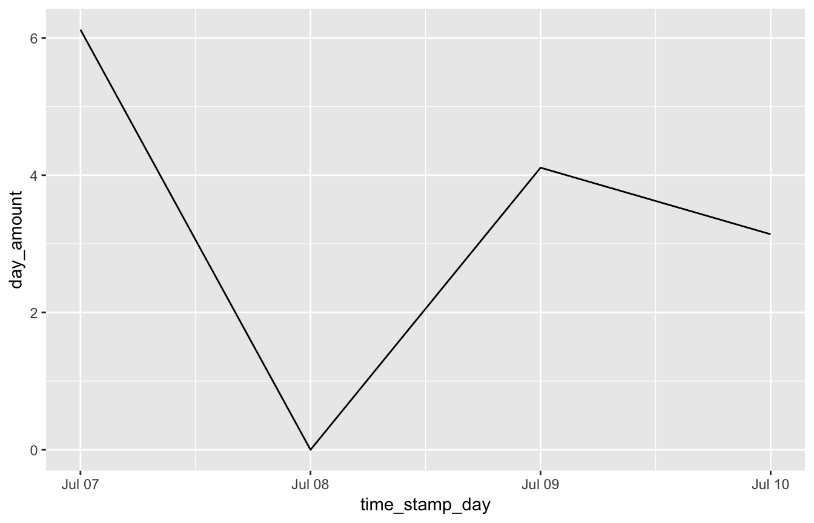
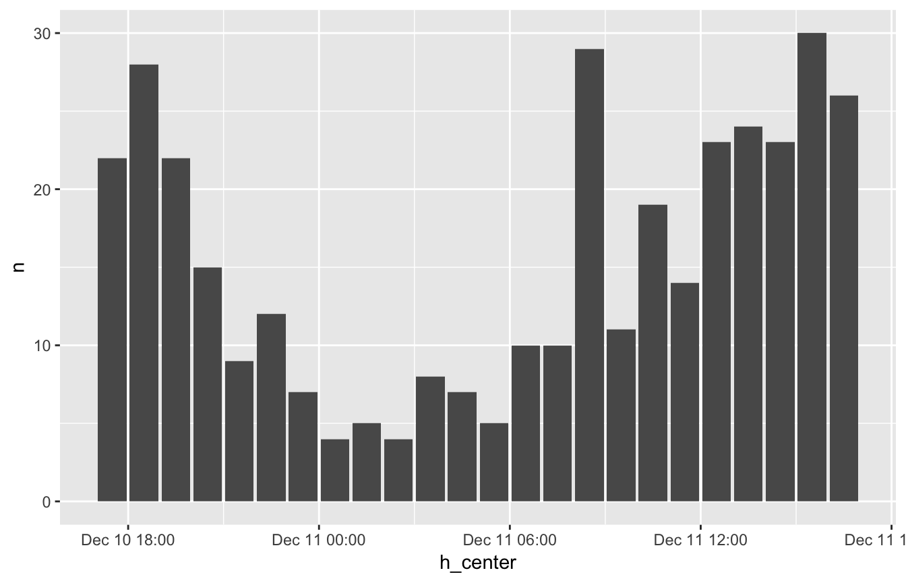
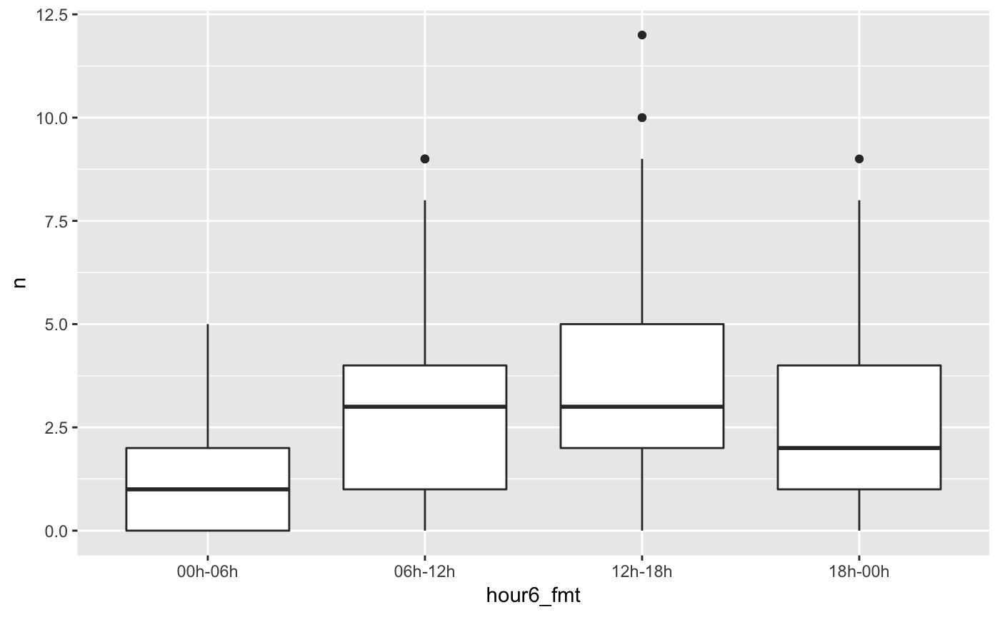

When getting time series data ready for analysis, you might be confronted with the following two challenges:
padr aims to make light work of preparing time series data by offering the two main functions thicken and pad. A small example before we get into detail. Say I want to make a line plot of my daily expenses at the coffee place. The data for a few days might look like.
## time_stamp amount
## 1 2016-07-07 09:11:21 3.14
## 2 2016-07-07 09:46:48 2.98
## 3 2016-07-09 13:25:17 4.11
## 4 2016-07-10 10:45:11 3.14Using padr in combination with dplyr this plot is made in the following way:
library(ggplot2); library(dplyr)
coffee %>%
thicken('day') %>%
group_by(time_stamp_day) %>%
summarise(day_amount = sum(amount)) %>%
pad() %>%
fill_by_value() %>%
ggplot(aes(time_stamp_day, day_amount)) + geom_line()
Quite some stuff going on here, let’s go through the functions one by one to see what they do.
thicken adds a column to a data frame that is of a higher interval than that of the original datetime variable. The interval in the padr context is the heartbeat of the data, the recurrence of the observations.1 The original variable “time_stamp” had the interval second, the added variable was of interval day.
## [1] "sec"## [1] "day"thicken does figure out some stuff for you. First it finds the datetime variable in your data frame (given there is only one). Next it will determine the interval of this variable, which is one of the following: year, quarter, month, week, day, hour, minute, or second. Besides the interval, it also finds the interval unit (E.g. 5 minutes, 10 days, 2 months). Finally, it adds a variable to the data frame that is of a higher interval than the interval of the original datetime variable. The user can then use this variable to aggregate to the higher level, for instance using dplyr’s group_by and summarise. Besides the interval, the user can also specify the units. When no unit is specified, a single unit is applied.
to_thicken <- data.frame(day_var = as.Date(c('2016-08-12', '2016-08-13',
'2016-08-26', '2016-08-29')))
to_thicken %>% thicken(interval = "week")## day_var day_var_week
## 1 2016-08-12 2016-08-07
## 2 2016-08-13 2016-08-07
## 3 2016-08-26 2016-08-21
## 4 2016-08-29 2016-08-28## day_var day_var_4_day
## 1 2016-08-12 2016-08-11
## 2 2016-08-13 2016-08-11
## 3 2016-08-26 2016-08-23
## 4 2016-08-29 2016-08-27We see different default behavior for the different intervals. Week intervals start on Sundays, day intervals start on the first day found in the datetime variable. In many situations the user will be content with thicken’s defaults. However, you can specify the start_val as an offset if you would like to start the returned interval on a different day or datetime.
We use the emergency data set for further illustration. It contains 120,450 emergency calls in Montgomery County, PA, between 2015-12-10 and 2016-10-17. It has four columns that contain information about the location of the emergency, a title field indicating the type of the emergency, and a time stamp. The data set was created from a Google Api, thanks to Mike Chirico for maintaining this set.
## # A tibble: 6 x 6
## lat lng zip title time_stamp twp
## <dbl> <dbl> <int> <chr> <dttm> <chr>
## 1 40.3 -75.6 19525 EMS: BACK PAINS/INJ… 2015-12-10 17:40:00 NEW HANOVER
## 2 40.3 -75.3 19446 EMS: DIABETIC EMERG… 2015-12-10 17:40:00 HATFIELD TOWN…
## 3 40.1 -75.4 19401 Fire: GAS-ODOR/LEAK 2015-12-10 17:40:00 NORRISTOWN
## 4 40.1 -75.3 19401 EMS: CARDIAC EMERGE… 2015-12-10 17:40:01 NORRISTOWN
## 5 40.3 -75.6 NA EMS: DIZZINESS 2015-12-10 17:40:01 LOWER POTTSGR…
## 6 40.3 -75.3 19446 EMS: HEAD INJURY 2015-12-10 17:40:01 LANSDALESay we are interested in the number of overdoses that occurred daily. However, we don’t want incidents during the same night to be split into two days, what would have happened when we use the default behavior. Rather, we reset the count at 8 am, grouping all nightly cases to the same day. The interval is still day, but each new day starts at 8 am instead of midnight. The start_val serves as an offset.
emergency %>% filter(title == 'EMS: OVERDOSE') %>%
thicken('day',
start_val = as.POSIXct('2015-12-11 08:00:00', tz = 'EST'),
colname = 'daystart') %>%
group_by(daystart) %>%
summarise(nr_od = n()) %>%
head()## # A tibble: 6 x 2
## daystart nr_od
## <dttm> <int>
## 1 2015-12-11 08:00:00 1
## 2 2015-12-12 08:00:00 6
## 3 2015-12-13 08:00:00 7
## 4 2015-12-14 08:00:00 8
## 5 2015-12-15 08:00:00 1
## 6 2015-12-16 08:00:00 4Note also that we specified the column name of the added column. If we don’t, thicken takes the column name of the original datetime variable and appends it with the interval of the thickened variable, separated by an underscore.
Two final points on intervals before we are going to pad:
The second workhorse of padr is pad. It does date padding:
account <- data.frame(day = as.Date(c('2016-10-21', '2016-10-23', '2016-10-26')),
balance = c(304.46, 414.76, 378.98))
account %>% pad()## pad applied on the interval: day## day balance
## 1 2016-10-21 304.46
## 2 2016-10-22 NA
## 3 2016-10-23 414.76
## 4 2016-10-24 NA
## 5 2016-10-25 NA
## 6 2016-10-26 378.98The account dataframe has three observations on different days. Like thicken, the pad function figures out what the datetime variable in the data frame is, and then assesses its interval. Next it notices that within the interval, day in this case, rows are lacking between the first and last observation. It inserts a row in the data frame for every time point that is lacking from the data set. All non-datetime values will get missing values at the padded rows.
It is up to the user what to do with the missing records. In the case of the balance of an account we want to carry the last observation forward. It needs tidyr::fill to arrive at the tidy data set.
## pad applied on the interval: day## day balance
## 1 2016-10-21 304.46
## 2 2016-10-22 304.46
## 3 2016-10-23 414.76
## 4 2016-10-24 414.76
## 5 2016-10-25 414.76
## 6 2016-10-26 378.98Also pad allows for deviations from its default behavior. By default it pads all observations between the first and the last observation, but you can use start_val and end_val to deviate from this. You can also specify a lower interval than the one of the variable, using pad as the inverse of thicken.
## day balance
## 1 2016-10-20 22:00:00 NA
## 2 2016-10-20 23:00:00 NA
## 3 2016-10-21 00:00:00 304.46
## 4 2016-10-21 01:00:00 NA
## 5 2016-10-21 02:00:00 NA
## 6 2016-10-21 03:00:00 NAWhen you want to thicken and pad within groups there are two options. Either you group the data with dplyr::group_by() before applying them, or you specify the group argument in pad. Note that thicken does not have a grouping argument, because thickening with or without grouping would give the same result. However, thicken does preserve dplyr grouping.
grouping_df <- data.frame(
group = rep(c("A", "B"), c(3, 3)),
date = as.Date(c("2017-10-02", "2017-10-04", "2017-10-06", "2017-10-01",
"2017-10-03", "2017-10-04")),
value = rep(2, 6)
)
grouping_df %>%
pad(group = "group")## pad applied on the interval: day## group date value
## 1 A 2017-10-02 2
## 2 A 2017-10-03 NA
## 3 A 2017-10-04 2
## 4 A 2017-10-05 NA
## 5 A 2017-10-06 2
## 6 B 2017-10-01 2
## 7 B 2017-10-02 NA
## 8 B 2017-10-03 2
## 9 B 2017-10-04 2Note in the above that each group is padded from its own start to its end. If you want the starts and ends of each groups to be similar use the start_val and end_val arguments. Note further that the interval on which to pad is assessed over the groups. It is assumed that the user wants to bring all observations to the same interval. If you do want each group to have its own interval, use dplyr::do in the following way.
## pad applied on the interval: 2 day## pad applied on the interval: day## Warning: Factor `group` contains implicit NA, consider using
## `forcats::fct_explicit_na`
## Warning: Factor `group` contains implicit NA, consider using
## `forcats::fct_explicit_na`## # A tibble: 7 x 3
## # Groups: group [3]
## group date value
## <fct> <date> <dbl>
## 1 A 2017-10-02 2
## 2 A 2017-10-04 2
## 3 A 2017-10-06 2
## 4 B 2017-10-01 2
## 5 <NA> 2017-10-02 NA
## 6 B 2017-10-03 2
## 7 B 2017-10-04 2We already saw tidyr::fill coming in handy for the filling of missing values after padding. padr comes with three more fill functions: fill_by_value, fill_by_function, and fill_by_prevalent. They fill missing values by respectively a single value, a function of the nonmissing values, and the most prevalent value among the nonmissing values.
counts <- data.frame(x = as.Date(c('2016-11-21', '2016-11-23', '2016-11-24')),
y = c(2, 4, 4)) %>% pad## pad applied on the interval: day## x y
## 1 2016-11-21 2
## 2 2016-11-22 0
## 3 2016-11-23 4
## 4 2016-11-24 4## x y
## 1 2016-11-21 2
## 2 2016-11-22 42
## 3 2016-11-23 4
## 4 2016-11-24 4## x y
## 1 2016-11-21 2.000000
## 2 2016-11-22 3.333333
## 3 2016-11-23 4.000000
## 4 2016-11-24 4.000000## x y
## 1 2016-11-21 2
## 2 2016-11-22 4
## 3 2016-11-23 4
## 4 2016-11-24 4Note that in the first fill_by_value the columns to fill are not specified. In this case the filling is applied on all the columns. The other two functions also have this default behavior.
After aggregating the data to a higher interval, all the observations in an interval are represented by a single point in time. This is either the first (rounding down) or the last (rounding up) datetime point of the interval. Two functions are offered to reformat the datetime variable, so the data might be better represented a table or a graph. First of all, center_interval will move the time point to the center of the interval. This would give a better representation in point, line and bar graphs.
emergency %>%
thicken("hour", "h") %>%
count(h) %>%
slice(1:24) %>%
mutate(h_center = center_interval(h)) %>%
ggplot(aes(h_center, n)) + geom_bar(stat = "identity")
The bars are now between the hours, rather than on the hours. More true to the nature of the interval.
Next, there is format_interval. This creates a categorical variable that describes the start and end of the interval. This works great with asymmetric data, as shown in the dedicated vignette, but can also be informative with regular intervals. You can specify the way you want the start and the end to be formatted just like you would in strftime.
emergency %>%
filter(title == "EMS: HEAD INJURY") %>%
thicken("6 hour", "hour6") %>%
count(hour6) %>%
pad() %>%
fill_by_value() %>%
mutate(hour6_fmt =
format_interval(hour6, start_format = "%Hh", sep = "-")) %>%
ggplot(aes(hour6_fmt, n)) +
geom_boxplot()
There are two more vignettes. In padr_implementation you can find more information about how padr handles daylight savings time, what it does with different time zones and how thicken exactly is implemented. padr_custom shows you how you can thicken and pad with asymmetric intervals.
Found a bug? Ideas for improving or expanding padr. Your input is much appreciated. The code is maintained at https://github.com/EdwinTh/padr and you are most welcome to file an issue or do a pull request.
Many users who work with date and time variables will be using the lubridate package. The definition of an interval in lubridate is different from the definition in padr. In lubridate an interval is a period between two time points and has nothing to do with recurrence. Please keep this in mind.↩